KIVY
DESARROLLO DE APLICACIONES PARA ANDROID CON PYTHON
¿ QUÉ ES KIVY ?
- Es una librería escrita en Python para desarrollo de aplicaciones multiplataforma.
- Desarrollado utilizando Python y Cython.
- Se basa en OpenGL ES 2.

¿PORQUÉ KIVY?
- Soporte de Multitouch.
- Uso de API OpenGL.
- Empaquetación ANDROID/IOS
- Multiplataforma
- Licencia MIT
INSTALACIÓN DE KIVY
En el sistema Operativo Windows estamos usando Anaconda como gestor de paquetes , los pasos para instalar Kivy
""" Buscar el paquete de Kivy desde Conda """
anaconda search -t conda kivy
""" Instalar el paquete de Kivy desde Conda """
#Instalar Kivy con las Dependencias
conda install -c conda-forge kivy
conda install -c conda-forge/label/cf201901 kivy
""" Instalación desde Pip """
python -m pip install docutils pygments pypiwin32
python -m pip install kivy.deps.sdl2 kivy.deps.glew
python -m pip install kivy.deps.gstreamer
python -m pip install kivy
KIVY RUN BASE TOUCH APP
Es una función principal estática que inicia el bucle de la aplicación.que tiene los siguientes parametros
Parámetros
`empty` necesitas al menos una widget de entrada
`widget` Si sólo pasa un widget, se creará una ventana de MTWindow y tu widget se añadirá a la ventana como root
KIVY RUN BASE TOUCH APP
Parámetros
`slave` No hay evento planificado
`widget + slave` No hay evento planificado , este será tu trabajo pero intentam conseguir la ventana (debe ser creado por usted de antemano) y añadir el widget. Muy útil para la incrustación de Kivy en otro toolkit.
ORIENTACIÓN
Es la forma que se puede presentar la aplicación ya sea horizontal o vertical
PADDING
el espacio de relleno requerido por todos los lados de un elemento ,en este caso un widget

SIZE_HINT
Es una tupla de valores para manejar los tamaños de widgets e indica el tamaño relativo al tamaño del layout en lugar de un tamaño absoluto (en píxeles/puntos/cm/etc).
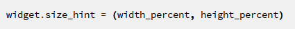El porcentaje se especifica como un número de punto flotante en el rango 0-1. Por ejemplo, 0.5 es 50%, 1 es 100%.
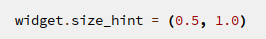POS_HINT
Es una tupla de valores para manejar los tamaños de widgets donde los valores sean relativos al tamaño/posición del padre. Así que aquí, para b1 x será la x del padre, y center_y estará en el medio entre y y top.
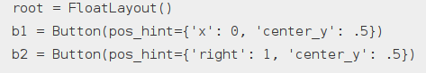IMPORTACIÓN DE LA LIBRERÍA KIVY
/* Importamos Kivy* /
import kivy
kivy.require(‘1.10.0’)22 PYTHON.
from kivy.app import App
/*El uix.button es la sección que contiene los elementos de la interfaz de
usuario, como diseños y widgets que se desea mostrar */
from kivy.uix.button import Label
/* Aquí es donde estamos deniendo la clase base de nuestra aplicación Kivy.
Solo deberías necesitar cambiar el nombre de su aplicación MyApp en esta línea:*/
class MiAplicacion(App):
/*Función que inicializa y retorna el widget*/
def build(self):
return Label(text=’Hola Mundo’)
/*La clase MyApp se inicializa y se llama a su método run ().
Esto inicializa y comienza nuestro Kivy*/
if __name__ == “__main__”:
MiAplicacion().run()
LENGUAJE KVLANG
Lenguaje de marcación definido por los creadores de Kivy se usa para la construcción de interfaces gráficas,su proposito es separar la interfaz del usuario de la lógica de negocio
Nuestro archivo.kv debe llevar el mismo nombre de la clase principal de Python archivo.py en minúsculas.
LENGUAJE KVLANG
Lenguaje de marcación definido por los creadores de Kivy se usa para la construcción de interfaces gráficas,su proposito es separar la interfaz del usuario de la lógica de negocio
ReglasUna regla es similar a una regla CSS. Una regla se aplica a widgets específicos (o clases de ellos) en su árbol de widgets y los modifica de cierta manera. Puede utilizar reglas para especificar el comportamiento interactivo o utilizarlas para añadir representaciones gráficas de los widgets a los que se aplican. Puede dirigir una clase específica de widgets (similar al concepto CSS de una clase) utilizando el atributo cls (por ejemplo, cls=MyTestWidget).
Un Widget RaízPuede utilizar el idioma para crear toda la interfaz de usuario. Un archivo kv debe contener sólo un widget raíz como máximo
ESTRUCTURA DE KVLANG
Hay 3 tipos de palabras claves específicas en kv:
- app: Se refiere a la instancia de la aplicación
- root: Es el widget base.
- self: Se refiere al widget actual
COMPONENTES BÁSICOS DE KIVY
- WIDGET
- LAYOUTS
WIDGET
Un widget es el componente básico de las interfaces en Kivy. Una interfaz de usuario generalmente tiene muchos elementos, como cuadros de texto de entrada, etiquetas, listas desplegables, botones, botones de radio, etc. Estos elementos se denominan widgets en Kivy
TIPOS DE EVENTO
Los widgets crean tres eventos
- Abajo:Un toque se produce una sola vez, en el mismo momento en que aparece por primera vez.
- Mover:Un contacto puede estar en este estado por un tiempo potencialmente ilimitado. Un toque no tiene que estar en este estado durante su vida. Un'Movimiento' ocurre cada vez que la posición 2D de un toque cambia.
- Arriba:Un toque sube a lo sumo una vez, o nunca. En la práctica, casi siempre recibirás un evento ascendente porque nadie va a mantener un dedo en la pantalla
LABEL
Un widget es el componente básico de las interfaces en Kivy se utiliza para mostrar texto
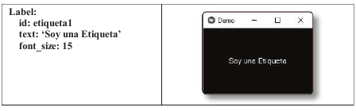
BOTON
Es un label con las acciones asociadas que se activan cuando se pulsa el botón (o se suelta después de un clic/toque)
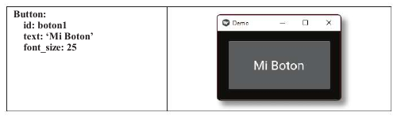
ACTION BAR
Es similar de acción de Android, donde los elementos se apilan horizontalmente. Cuando el área se vuelve pequeña, los widgets se mueven al área de ActionOverflow
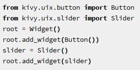ACTION BAR

CHECK BOX
Es similar de acción de Android, donde los elementos se apilan horizontalmente. Cuando el área se vuelve pequeña, los widgets se mueven al área de ActionOverflow
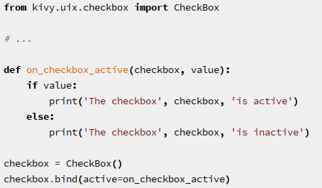CHECKBOX

PROGRESS BAR
se utiliza para visualizar el progreso de alguna tarea. Actualmente sólo se admite el modo horizontal: el modo vertical aún no está disponible.
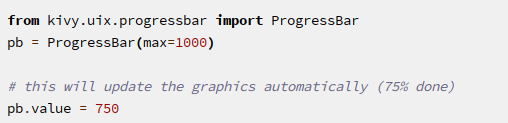PROGRESS BAR

SCATTER
Se utiliza para crear widgets interactivos que se pueden girar y escalar con dos o más dedos en un sistema multitáctil,
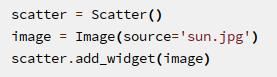
SCATTER

CANVAS
La representación gráfica de un widget está representada con Kivy Canvas. Puedes dibujar lo lienzo (canvas).
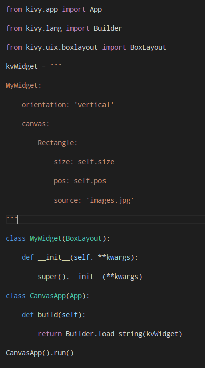
CANVAS

AYSINIMAGE
Se utiliza para hacer la carga imagen desde un recurso externo (URL externa de la imagen)

TEXTINPUT
Proporciona un cuadro para texto plano editable. Unicode, multilínea, navegación por cursor, selección y funciones de portapapeles son compatibles.
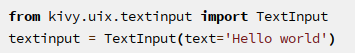
TEXTINPUT

SLIDER
ES una barra de desplazamiento. Soporta orientaciones horizontales y verticales, valores mínimos/máximos y un valor por defecto.
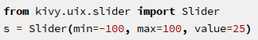
SLIDER

LAYOUTS
El layout es un contenedor es donde colocamos los elementos de una aplicación o sitio web, los contenedores no ayudaran en el ordenamiento adecuado de los elementos que una aplicación puede contener grácamente.
Estos se usan para organizar los widgets ,ejemplos de ello son los diseños de cuadrícula o los diseños de caja.
BOXLAYOUT
En este layout puedes agregar varios elementos los cuales se ordenan dependiendo del tamaño de cada elemento dentro del mismo , el layout puede tener la orientación horizontal o vertical
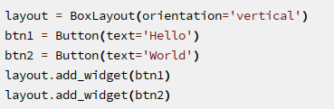BOXLAYOUT

FLOATLAYOUT
En este layout puedes agregar varios elementos los cuales se ordenan como nosotros deseemos .FloatLayout hereda las propiedades pos_hint y size_hint de los widgets que están contenidos dentro de él.
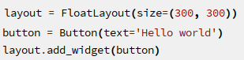FLOATLAYOUT

GRIDLAYOUT
Es un layout que agrega los widgets en una matriz tomando el espacio disponible y lo divide en columnas y filas, luego añade widgets a las "celdas" resultantes. tenemos que de unir por lo menos su dimensión, si queremos que tenga una columna o más de igual forma , se puedes ver este layout como una hoja de cálculo donde cada elemento toma su lugar de acuerdo al orden que los agregue
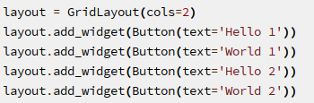GRIDLAYOUT

RELATIVELAYOUT
Se comporta igual que la FloatLayout normal, excepto que sus widgets están posicionados en relación con la app
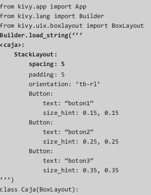RELATIVELAYOUT
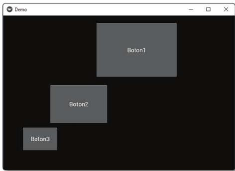STACKLAYOUT
Es un layout organiza a los widgtes en forma vertical u horizontal, tantas como pueda caber en el diseño. El tamaño de los widgets individuales no tiene que ser uniforme.
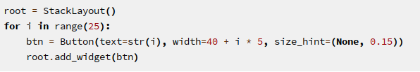STACKLAYOUT

ARQUITECTURA DE KIVY
A continuación detallaremos como está compuesta la aplicación creada en Kivy
- Core Providers
- Graphics
- Core
- UIX
- Modules
- Events

CORE PROVIDERS
Los proveedores de Servicio en Kivy son 2: Proveedores Principales y Proveedores de Entrada
Las etiquetas y los botones utilizan las mismas propiedades de configuración.
GRAFICOS
Kivy emite comandos de dibujo acelerados por hardware utilizando la GPU del celular mediante OpenGL.La API de gráficos que te permite dibujar cosas simples por ejemplo: Circulos, Rectángulo.
CORE
Proporciona código para realizar tareas comunes
- Reloj:Programar eventos similar a un cron
- Cache:Si necesitas almacenar en caché algo que usas a menudo
- Detección de gestos Puede utilizar para detectar varios tipos de trazos
CICLO DE VIDA DE LA APLICACIÓN
A continuación detallaremos el ciclo de vida de una aplicación creada en Kivy

APLICACION ANDROID
Crearemos un pequeño editor de texto La aplicación se compone de 2 archivos Plantilla.Kv que contiene 2 archivos Plantilla.kv y EditorTexto.py
- Plantilla.kv es toda la interfaz de usuario
- EditorTexto es contiene toda la lógica para interactuar con los archivos
BUILDOZER
Buildozer es un paquete escrito en Python que permite empaquetar la aplicación escrita con Kivy y generar el apk.
#Instalación de Buildozer
python -m pip install buildozer
buildozer android init
USO DE BUILDOZER
.
#Apk para depuración
buildozer android debug
#Apk para release
buildozer android release
COMPILAR PARA ANDROID
Buildozer es un paquete escrito en Python que permite empaquetar la aplicación escrita con Kivy y generar el apk.
#Instalación de Buildozer
pip install buildozer
buildozer android init